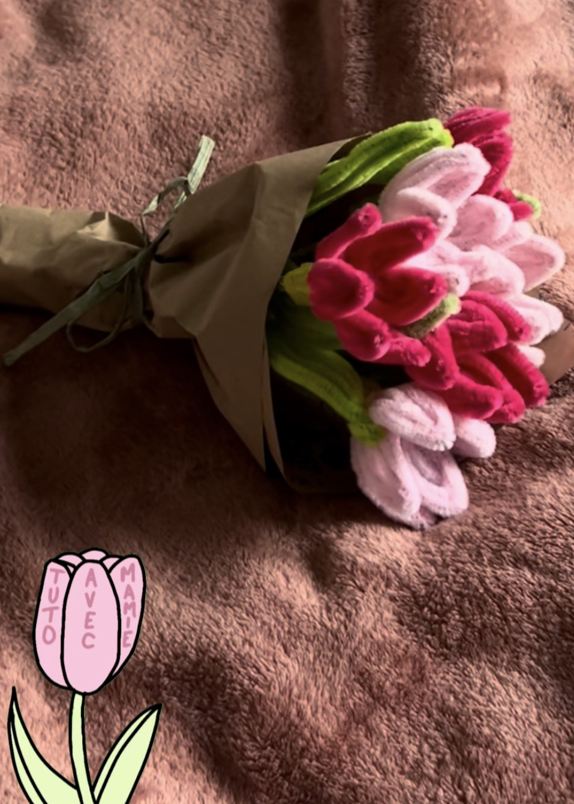
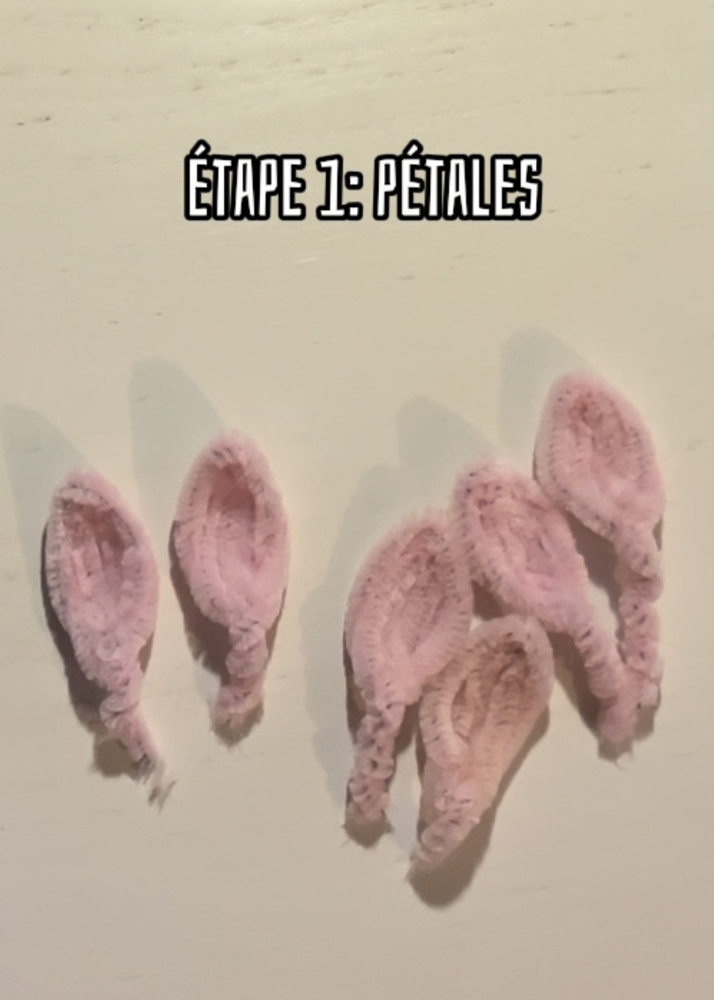
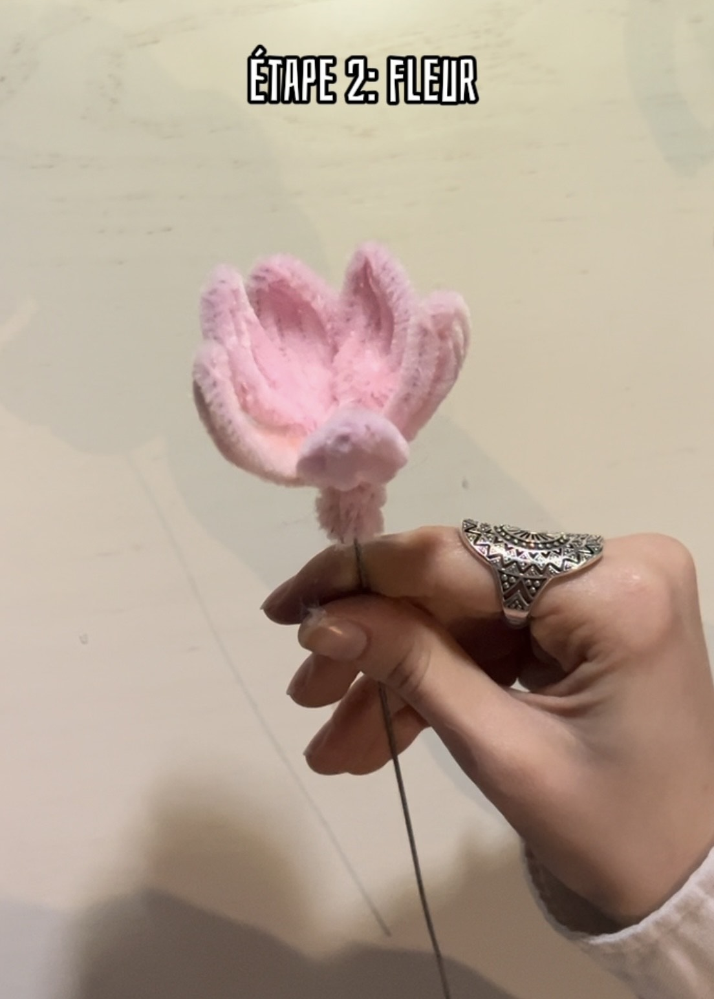
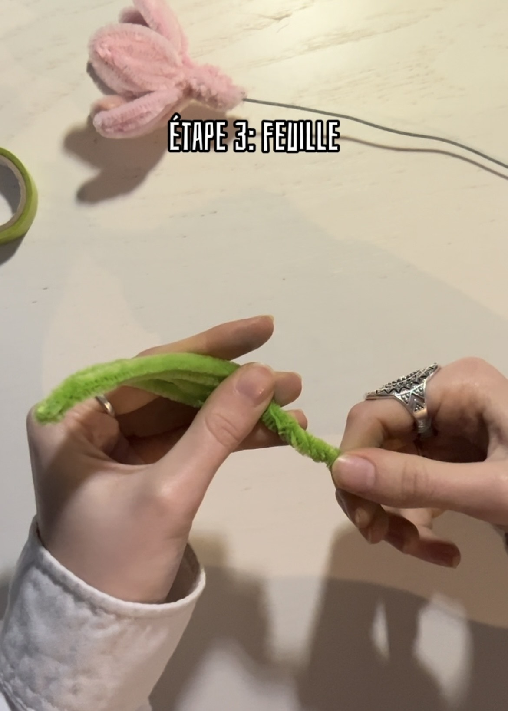
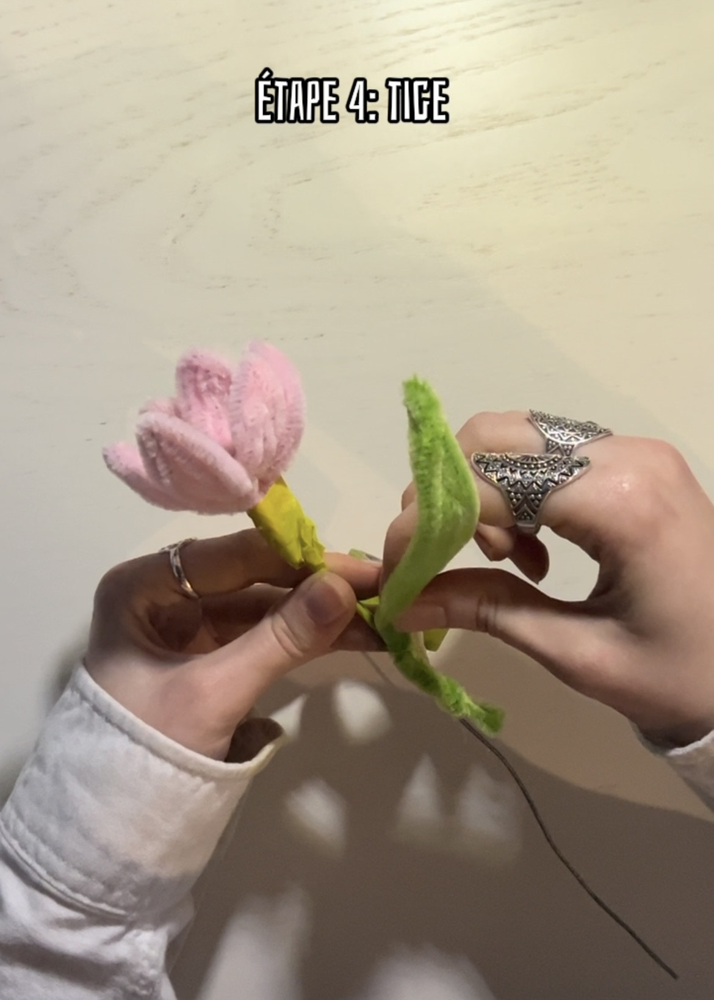
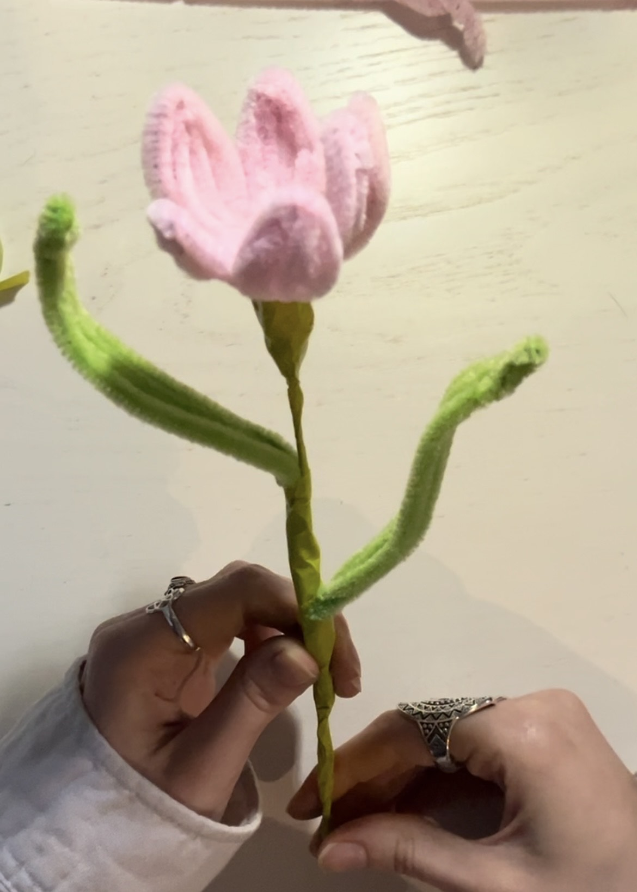
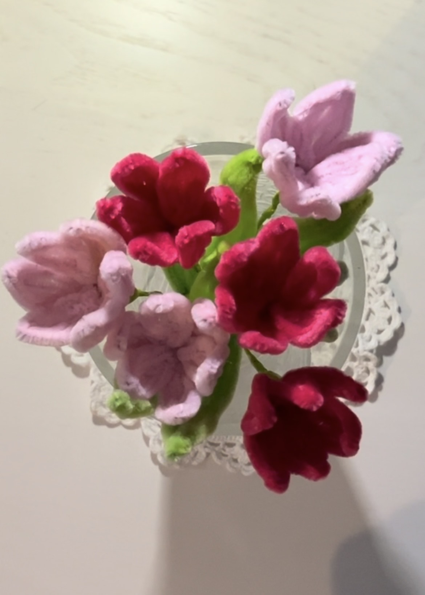
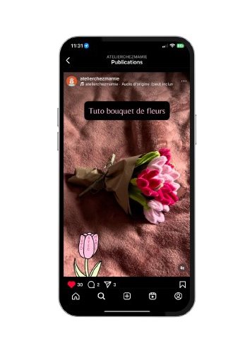

Matériel
- De fils de chenilles verts
- De fils de chenilles roses
- De fils de fer
- De masking tape vert
- D'un pistolet à colle

Étape 1 : Les pétales 🌺
- Prends un fil chenille et plie-le en deux
- Forme une boucle et tourne les fils
- Répète 6 fois pour faire 6 pétales 😉

Étape 2 : Les fleurs 🌸
- Colle les pétales à la tige
- Fais attention au placement

Étape 3 : Les feuilles 🍃
- Plie deux fils verts et tourne-les
- Fixe-les solidement

Étape 4 : La tige 🌿
- Enroule le masking tape autour de la tige
- Fixe les feuilles avec de la colle

Voilà le rendu final 🌷

Le bouquet final 💐
Répète l'opération pour créer ton bouquet 🩷

Pour un tuto vidéo...
Si tu veux un tuto en format vidéo, un réel insta est disponible juste
ICI ✨